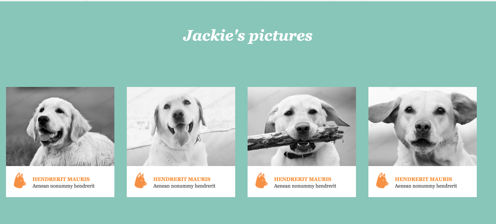

Drop-Down Menu Header
What I hope to practice/learn?
A header is a crucial element to a website. Getting it to sit on the page and function properly is even more crucial.
How this relates to what I have/will learn.
Having a header tool bar with drop-down elements makes a website even more useful by providing more links for the user to click
and allow them to get more specific with what they are looking for without having to use a search bar.
How might I build this?
| 1 |
Create the component as a header tag |
| 2 |
Company branding established using image tag or heading 1 tag |
| 3 |
Navigation using the nav tag containing an unordered list tag with four list item tags for children each containing an anchor tag. |
| 4 |
Dropdown menu items will be nested using unordered list item tags inside corresponding list item tags. |

Search Box
What I hope to practice/learn?
I want to figure out how actually get a search box to work. The few times I've used it, I had a terrible time trying to figure it out and it never actually worked.
How this relates to what I have/will learn.
The search box will help me with functions and learning how to get the find function to work based on what the user types in. As well as creating libraries of searches to aid the user in finding what they need.
How might I build this?

Responsive Features List
What I hope to practice/learn?
I hope to learn how to get responsiveness to work properly when sizing down windows and to get all the elements to behave when I do so. Like when it takes a horizontal list of elements and converts them to a vertical list for smaller windows.
How this relates to what I have/will learn.
This feature will aid the user in using my site on any platform and device. As well as just resizing it on a larger screen so as to fit multiple windows on the screen.
How might I build this?

Testimonial Pagination
What I hope to practice/learn?
How this relates to what I have/will learn.
How might I build this?

Footer
What I hope to practice/learn?
How this relates to what I have/will learn.
How might I build this?